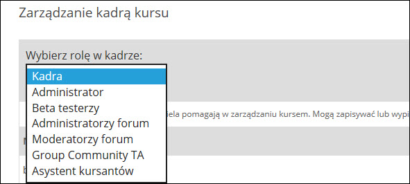

Uprawnienia
Zarządzanie dyskusjami w kursie wymaga nadania uprawnień autorom, prowadzącym i moderatorom. Dla przykładu takie operacje, jak przypinanie wpisów i ich usuwanie wymagają uprawnień Administratora forum.
Role te można przypisać z poziomu panelu prowadzącego w LMS, który jest jedną ze stron w kursie. Jest on widoczny tylko dla osób wpisanych jako kadra kursu - dla uczestników kursu pozostaje on niewidoczny. Tam należy wejść w zakładkę "Członkostwo".
Następnie należy odnaleźć obszar Zarządzanie kadrą kursu, w którym mamy dostęp do wszystkich ról, jakie występują w naszym kursie.

Wśród tych ról możemy znaleźć m.in. administratorów forum. Wybierając tę rolę, zobaczymy wszystkich administratorów forum. Jeśli pracujesz z nowo utworzonym kursem, to najprawdopodobniej ta lista będzie jeszcze pusta. Aby nadać sobie takie uprawnienia, należy wpisać swoją nazwę użytkownika, a następnie nacisnąć przycisk "Dodaj administratora forum".
Jeśli wszystko przebiegnie pomyślnie i wpiszesz poprawną nazwę użytkownika, to uzyskasz uprawnienia administracyjne we wszystkich dyskusjach w swoim kursie.
Możesz teraz wrócić do utworzonego wcześniej wątku i go przypiąć.
Moderatorzy forum
Z uwagi na dużą liczbę uczestników w kursach typu MOOC zalecaną praktyką jest przypisanie do kursu osób, które pomogą w zarządzaniu dyskusjami, odpowiadać na pytania uczestników kursu, pilnować, czy dyskusje są prowadzone w duchu wzajemnego szacunku, czy też kierować pytania do innego, istniejącego już, wątku.
System uwzględnia 3 dodatkowe poziomy uprawnień. W kolejności od poziomu z największymi uprawnieniami są to:
- Moderatorzy forum - posiadają takie same uprawnienia, jak administrator kursu, ale nie mogą zarządzać kadrą kursu. Ich wpisy są oznaczone jako "Kadra".
- Asystenci moderatora - posiadają takie same uprawnienia, jak moderatorzy, ale ich wpisy są oznaczane jako "Asystent moderatora". Muszą być wybrani spośród uczestników kursu.
- Asystenci moderatora grupy - posiadają takie same uprawnienia, jak moderatorzy, ale ich wpisy są oznaczane jako "Asystent moderatora". Muszą być wybrani spośród uczestników kursu. Mogą moderować dyskusje tylko wewnątrz ich własnej grupy. Ta rola może być przypisana tylko wtedy, gdy w kursie istnieją grupy i są dla nich wydzielone osobne dyskusje.
�